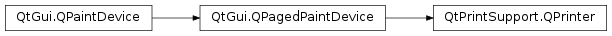

QPrinter¶
Synopsis¶
Functions¶
- def
abort() - def
actualNumCopies() - def
collateCopies() - def
colorMode() - def
copyCount() - def
creator() - def
docName() - def
doubleSidedPrinting() - def
duplex() - def
fontEmbeddingEnabled() - def
fromPage() - def
fullPage() - def
getPageMargins(, unit) - def
isValid() - def
numCopies() - def
orientation() - def
outputFileName() - def
outputFormat() - def
pageOrder() - def
pageRect() - def
pageRect(arg__1) - def
paperName() - def
paperRect() - def
paperRect(arg__1) - def
paperSize() - def
paperSize(unit) - def
paperSource() - def
pdfVersion() - def
printEngine() - def
printProgram() - def
printRange() - def
printerName() - def
printerState() - def
resolution() - def
setCollateCopies(collate) - def
setColorMode(arg__1) - def
setCopyCount(arg__1) - def
setCreator(arg__1) - def
setDocName(arg__1) - def
setDoubleSidedPrinting(enable) - def
setDuplex(duplex) - def
setEngines(printEngine, paintEngine) - def
setFontEmbeddingEnabled(enable) - def
setFromTo(fromPage, toPage) - def
setFullPage(arg__1) - def
setNumCopies(arg__1) - def
setOrientation(arg__1) - def
setOutputFileName(arg__1) - def
setOutputFormat(format) - def
setPageMargins(left, top, right, bottom, unit) - def
setPageOrder(arg__1) - def
setPaperName(paperName) - def
setPaperSize(arg__1) - def
setPaperSize(paperSize, unit) - def
setPaperSource(arg__1) - def
setPdfVersion(version) - def
setPrintProgram(arg__1) - def
setPrintRange(range) - def
setPrinterName(arg__1) - def
setResolution(arg__1) - def
setWinPageSize(winPageSize) - def
supportedResolutions() - def
supportsMultipleCopies() - def
toPage() - def
winPageSize()
Detailed Description¶
The
PySide2.QtPrintSupport.QPrinterclass is a paint device that paints on a printer.This device represents a series of pages of printed output, and is used in almost exactly the same way as other paint devices such as
PySide2.QtWidgets.QWidgetandPySide2.QtGui.QPixmap. A set of additional functions are provided to manage device-specific features, such as orientation and resolution, and to step through the pages in a document as it is generated.When printing directly to a printer on Windows or macOS ,
PySide2.QtPrintSupport.QPrinteruses the built-in printer drivers. On X11,PySide2.QtPrintSupport.QPrinteruses the Common Unix Printing System (CUPS) to send PDF output to the printer. As an alternative, thePySide2.QtPrintSupport.QPrinter.printProgram()function can be used to specify the command or utility to use instead of the system default.Note that setting parameters like paper size and resolution on an invalid printer is undefined. You can use
QPrinter.isValid()to verify this before changing any parameters.
PySide2.QtPrintSupport.QPrintersupports a number of parameters, most of which can be changed by the end user through aprint dialog. In general,PySide2.QtPrintSupport.QPrinterpasses these functions onto the underlyingPySide2.QtPrintSupport.QPrintEngine.The most important parameters are:
PySide2.QtPrintSupport.QPrinter.setOrientation()tellsPySide2.QtPrintSupport.QPrinterwhich page orientation to use.PySide2.QtPrintSupport.QPrinter.setPaperSize()tellsPySide2.QtPrintSupport.QPrinterwhat paper size to expect from the printer.PySide2.QtPrintSupport.QPrinter.setResolution()tellsPySide2.QtPrintSupport.QPrinterwhat resolution you wish the printer to provide, in dots per inch (DPI).PySide2.QtPrintSupport.QPrinter.setFullPage()tellsPySide2.QtPrintSupport.QPrinterwhether you want to deal with the full page or just with the part the printer can draw on.PySide2.QtPrintSupport.QPrinter.setCopyCount()tellsPySide2.QtPrintSupport.QPrinterhow many copies of the document it should print.Many of these functions can only be called before the actual printing begins (i.e., before
QPainter.begin()is called). This usually makes sense because, for example, it’s not possible to change the number of copies when you are halfway through printing. There are also some settings that the user sets (through the printer dialog) and that applications are expected to obey. SeePySide2.QtPrintSupport.QAbstractPrintDialog‘s documentation for more details.When
QPainter.begin()is called, thePySide2.QtPrintSupport.QPrinterit operates on is prepared for a new page, enabling thePySide2.QtGui.QPainterto be used immediately to paint the first page in a document. Once the first page has been painted,PySide2.QtPrintSupport.QPrinter.newPage()can be called to request a new blank page to paint on, orQPainter.end()can be called to finish printing. The second page and all following pages are prepared using a call toPySide2.QtPrintSupport.QPrinter.newPage()before they are painted.The first page in a document does not need to be preceded by a call to
PySide2.QtPrintSupport.QPrinter.newPage(). You only need to callingPySide2.QtPrintSupport.QPrinter.newPage()afterQPainter.begin()if you need to insert a blank page at the beginning of a printed document. Similarly, callingPySide2.QtPrintSupport.QPrinter.newPage()after the last page in a document is painted will result in a trailing blank page appended to the end of the printed document.If you want to abort the print job,
PySide2.QtPrintSupport.QPrinter.abort()will try its best to stop printing. It may cancel the entire job or just part of it.Since
PySide2.QtPrintSupport.QPrintercan print to anyPySide2.QtPrintSupport.QPrintEnginesubclass, it is possible to extend printing support to cover new types of printing subsystem by subclassingPySide2.QtPrintSupport.QPrintEngineand reimplementing its interface.See also
PySide2.QtPrintSupport.QPrintDialogQt Print Support
-
class
PySide2.QtPrintSupport.QPrinter([mode=ScreenResolution])¶ -
class
PySide2.QtPrintSupport.QPrinter(printer[, mode=ScreenResolution]) Parameters: Creates a new printer object with the given
mode.Creates a new printer object with the given
printerandmode.
-
PySide2.QtPrintSupport.QPrinter.PrinterMode¶ This enum describes the mode the printer should work in. It basically presets a certain resolution and working mode.
Constant Description QPrinter.ScreenResolution Sets the resolution of the print device to the screen resolution. This has the big advantage that the results obtained when painting on the printer will match more or less exactly the visible output on the screen. It is the easiest to use, as font metrics on the screen and on the printer are the same. This is the default value. will produce a lower quality output than and should only be used for drafts. QPrinter.PrinterResolution This value is deprecated. It is equivalent to on Unix and on Windows and Mac. Due to the difference between and , use of this value may lead to non-portable printer code. QPrinter.HighResolution On Windows, sets the printer resolution to that defined for the printer in use. For PDF printing, sets the resolution of the PDF driver to 1200 dpi. Note
When rendering text on a
PySide2.QtPrintSupport.QPrinterdevice, it is important to realize that the size of text, when specified in points, is independent of the resolution specified for the device itself. Therefore, it may be useful to specify the font size in pixels when combining text with graphics to ensure that their relative sizes are what you expect.
-
PySide2.QtPrintSupport.QPrinter.Orientation¶ This enum type (not to be confused with
Orientation) is used to specify each page’s orientation.Constant Description QPrinter.Portrait the page’s height is greater than its width. QPrinter.Landscape the page’s width is greater than its height. This type interacts with
QPrinter.PaperSizeandQPrinter.setFullPage()to determine the final size of the page available to the application.
-
PySide2.QtPrintSupport.QPrinter.PageOrder¶ This enum type is used by
PySide2.QtPrintSupport.QPrinterto tell the application program how to print.Constant Description QPrinter.FirstPageFirst the lowest-numbered page should be printed first. QPrinter.LastPageFirst the highest-numbered page should be printed first.
-
PySide2.QtPrintSupport.QPrinter.ColorMode¶ This enum type is used to indicate whether
PySide2.QtPrintSupport.QPrintershould print in color or not.Constant Description QPrinter.Color print in color if available, otherwise in grayscale. QPrinter.GrayScale print in grayscale, even on color printers.
-
PySide2.QtPrintSupport.QPrinter.PaperSource¶ This enum type specifies what paper source
PySide2.QtPrintSupport.QPrinteris to use.PySide2.QtPrintSupport.QPrinterdoes not check that the paper source is available; it just uses this information to try and set the paper source. Whether it will set the paper source depends on whether the printer has that particular source.Warning
This is currently only implemented for Windows.
Constant Description QPrinter.Auto QPrinter.Cassette QPrinter.Envelope QPrinter.EnvelopeManual QPrinter.FormSource QPrinter.LargeCapacity QPrinter.LargeFormat QPrinter.Lower QPrinter.MaxPageSource Deprecated, use instead QPrinter.Middle QPrinter.Manual QPrinter.OnlyOne QPrinter.Tractor QPrinter.SmallFormat QPrinter.Upper QPrinter.CustomSource A defined by the printer that is unknown to Qt QPrinter.LastPaperSource The highest valid value, currently
-
PySide2.QtPrintSupport.QPrinter.PrinterState¶ Constant Description QPrinter.Idle QPrinter.Active QPrinter.Aborted QPrinter.Error
-
PySide2.QtPrintSupport.QPrinter.OutputFormat¶ The enum is used to describe the format
PySide2.QtPrintSupport.QPrintershould use for printing.Constant Description QPrinter.NativeFormat PySide2.QtPrintSupport.QPrinterwill print output using a method defined by the platform it is running on. This mode is the default when printing directly to a printer.QPrinter.PdfFormat PySide2.QtPrintSupport.QPrinterwill generate its output as a searchable PDF file. This mode is the default when printing to a file.
-
PySide2.QtPrintSupport.QPrinter.PrintRange¶ Used to specify the print range selection option.
Constant Description QPrinter.AllPages All pages should be printed. QPrinter.Selection Only the selection should be printed. QPrinter.PageRange The specified page range should be printed. QPrinter.CurrentPage Only the current page should be printed. See also
PySide2.QtPrintSupport.QPrinter.setPrintRange()PySide2.QtPrintSupport.QPrinter.printRange()QAbstractPrintDialog.PrintRange
-
PySide2.QtPrintSupport.QPrinter.Unit¶ This enum type is used to specify the measurement unit for page and paper sizes.
Constant Description QPrinter.Millimeter QPrinter.Point QPrinter.Inch QPrinter.Pica QPrinter.Didot QPrinter.Cicero QPrinter.DevicePixel Note the difference between Point and . The Point unit is defined to be 1/72th of an inch, while the unit is resolution dependant and is based on the actual pixels, or dots, on the printer.
-
PySide2.QtPrintSupport.QPrinter.DuplexMode¶ This enum is used to indicate whether printing will occur on one or both sides of each sheet of paper (simplex or duplex printing).
Constant Description QPrinter.DuplexNone Single sided (simplex) printing only. QPrinter.DuplexAuto The printer’s default setting is used to determine whether duplex printing is used. QPrinter.DuplexLongSide Both sides of each sheet of paper are used for printing. The paper is turned over its longest edge before the second side is printed QPrinter.DuplexShortSide Both sides of each sheet of paper are used for printing. The paper is turned over its shortest edge before the second side is printed
-
PySide2.QtPrintSupport.QPrinter.abort()¶ Return type: PySide2.QtCore.boolAborts the current print run. Returns
trueif the print run was successfully aborted andPySide2.QtPrintSupport.QPrinter.printerState()will returnQPrinter.Aborted; otherwise returnsfalse.It is not always possible to abort a print job. For example, all the data has gone to the printer but the printer cannot or will not cancel the job when asked to.
-
PySide2.QtPrintSupport.QPrinter.actualNumCopies()¶ Return type: PySide2.QtCore.intReturns the number of copies that will be printed. The default value is 1.
This function always returns the actual value specified in the print dialog or using
PySide2.QtPrintSupport.QPrinter.setNumCopies().Use
PySide2.QtPrintSupport.QPrinter.copyCount()instead.
-
PySide2.QtPrintSupport.QPrinter.collateCopies()¶ Return type: PySide2.QtCore.boolReturns
trueif collation is turned on when multiple copies is selected. Returnsfalseif it is turned off when multiple copies is selected. When collating is turned off the printing of each individual page will be repeated thePySide2.QtPrintSupport.QPrinter.numCopies()amount before the next page is started. With collating turned on all pages are printed before the next copy of those pages is started.
-
PySide2.QtPrintSupport.QPrinter.colorMode()¶ Return type: PySide2.QtPrintSupport.QPrinter.ColorModeReturns the current color mode.
-
PySide2.QtPrintSupport.QPrinter.copyCount()¶ Return type: PySide2.QtCore.intReturns the number of copies that will be printed. The default value is 1.
-
PySide2.QtPrintSupport.QPrinter.creator()¶ Return type: unicode Returns the name of the application that created the document.
-
PySide2.QtPrintSupport.QPrinter.docName()¶ Return type: unicode Returns the document name.
See also
PySide2.QtPrintSupport.QPrinter.setDocName()QPrintEngine.PrintEnginePropertyKey
-
PySide2.QtPrintSupport.QPrinter.doubleSidedPrinting()¶ Return type: PySide2.QtCore.boolReturns
trueif double side printing is enabled.
-
PySide2.QtPrintSupport.QPrinter.duplex()¶ Return type: PySide2.QtPrintSupport.QPrinter.DuplexModeReturns the current duplex mode.
-
PySide2.QtPrintSupport.QPrinter.fontEmbeddingEnabled()¶ Return type: PySide2.QtCore.boolReturns
trueif font embedding is enabled.
-
PySide2.QtPrintSupport.QPrinter.fromPage()¶ Return type: PySide2.QtCore.intReturns the number of the first page in a range of pages to be printed (the “from page” setting). Pages in a document are numbered according to the convention that the first page is page 1.
By default, this function returns a special value of 0, meaning that the “from page” setting is unset.
Note
If and
PySide2.QtPrintSupport.QPrinter.toPage()both return 0, this indicates that the whole document will be printed .
-
PySide2.QtPrintSupport.QPrinter.fullPage()¶ Return type: PySide2.QtCore.boolReturns
trueif the origin of the printer’s coordinate system is at the corner of the page and false if it is at the edge of the printable area.See
PySide2.QtPrintSupport.QPrinter.setFullPage()for details and caveats.See also
PySide2.QtPrintSupport.QPrinter.setFullPage()PySide2.QtGui.QPagedPaintDevice.pageLayout()
-
PySide2.QtPrintSupport.QPrinter.getPageMargins(unit)¶ Parameters: unit – PySide2.QtPrintSupport.QPrinter.UnitReturns the page margins for this printer in
left,top,right,bottom. The unit of the returned margins are specified with theunitparameter.See also
PySide2.QtGui.QPagedPaintDevice.pageLayout()PySide2.QtPrintSupport.QPrinter.setPageMargins()
-
PySide2.QtPrintSupport.QPrinter.isValid()¶ Return type: PySide2.QtCore.boolReturns
trueif the printer currently selected is a valid printer in the system, or a pure PDF printer; otherwise returnsfalse.To detect other failures check the output of
QPainter.begin()orQPrinter.newPage().printer = QPrinter() printer.setOutputFormat(QPrinter.PdfFormat) printer.setOutputFileName("/foobar/nonwritable.pdf") QPainter painter if painter.begin(printer): # failed to open file print "failed to open file, is it writable?" return 1 painter.drawText(10, 10, "Test") if !printer.Page(): print "failed in flushing page to disk, disk full?" return 1 painter.drawText(10, 10, "Test 2") painter.end()
-
PySide2.QtPrintSupport.QPrinter.numCopies()¶ Return type: PySide2.QtCore.intReturns the number of copies to be printed. The default value is 1.
On Windows, macOS and X11 systems that support CUPS, this will always return 1 as these operating systems can internally handle the number of copies.
On X11, this value will return the number of times the application is required to print in order to match the number specified in the printer setup dialog. This has been done since some printer drivers are not capable of buffering up the copies and in those cases the application must make an explicit call to the print code for each copy.
Use
PySide2.QtPrintSupport.QPrinter.copyCount()in conjunction withPySide2.QtPrintSupport.QPrinter.supportsMultipleCopies()instead.
-
PySide2.QtPrintSupport.QPrinter.orientation()¶ Return type: PySide2.QtPrintSupport.QPrinter.OrientationReturns the orientation setting. This is driver-dependent, but is usually
QPrinter.Portrait.See also
PySide2.QtPrintSupport.QPrinter.setOrientation()PySide2.QtGui.QPagedPaintDevice.pageLayout()
-
PySide2.QtPrintSupport.QPrinter.outputFileName()¶ Return type: unicode Returns the name of the output file. By default, this is an empty string (indicating that the printer shouldn’t print to file).
See also
PySide2.QtPrintSupport.QPrinter.setOutputFileName()QPrintEngine.PrintEnginePropertyKey
-
PySide2.QtPrintSupport.QPrinter.outputFormat()¶ Return type: PySide2.QtPrintSupport.QPrinter.OutputFormatReturns the output format for this printer.
-
PySide2.QtPrintSupport.QPrinter.pageOrder()¶ Return type: PySide2.QtPrintSupport.QPrinter.PageOrderReturns the current page order.
The default page order is
FirstPageFirst.
-
PySide2.QtPrintSupport.QPrinter.pageRect(arg__1)¶ Parameters: arg__1 – PySide2.QtPrintSupport.QPrinter.UnitReturn type: PySide2.QtCore.QRectFReturns the page’s rectangle in
unit; this is usually smaller than thePySide2.QtPrintSupport.QPrinter.paperRect()since the page normally has margins between its borders and the paper.
-
PySide2.QtPrintSupport.QPrinter.pageRect() Return type: PySide2.QtCore.QRectReturns the page’s rectangle; this is usually smaller than the
PySide2.QtPrintSupport.QPrinter.paperRect()since the page normally has margins between its borders and the paper.The unit of the returned rectangle is
DevicePixel.See also
PySide2.QtGui.QPagedPaintDevice.pageLayout()
-
PySide2.QtPrintSupport.QPrinter.paperName()¶ Return type: unicode Returns the paper name of the paper set on the printer.
The default value for this is driver-dependent.
See also
PySide2.QtPrintSupport.QPrinter.setPaperName()PySide2.QtGui.QPagedPaintDevice.pageLayout()
-
PySide2.QtPrintSupport.QPrinter.paperRect()¶ Return type: PySide2.QtCore.QRectReturns the paper’s rectangle; this is usually larger than the
PySide2.QtPrintSupport.QPrinter.pageRect().The unit of the returned rectangle is
DevicePixel.See also
PySide2.QtGui.QPagedPaintDevice.pageLayout()
-
PySide2.QtPrintSupport.QPrinter.paperRect(arg__1) Parameters: arg__1 – PySide2.QtPrintSupport.QPrinter.UnitReturn type: PySide2.QtCore.QRectFReturns the paper’s rectangle in
unit; this is usually larger than thePySide2.QtPrintSupport.QPrinter.pageRect().
-
PySide2.QtPrintSupport.QPrinter.paperSize(unit)¶ Parameters: unit – PySide2.QtPrintSupport.QPrinter.UnitReturn type: PySide2.QtCore.QSizeFPySide2.QtGui.QPagedPaintDevice.pageLayout().fullPageSize() instead.Returns the paper size in
unit.Note that the returned size reflects the current paper orientation.
See also
PySide2.QtGui.QPagedPaintDevice.pageLayout()
-
PySide2.QtPrintSupport.QPrinter.paperSize() Return type: PySide2.QtGui.QPagedPaintDevice.PageSizeReturns the printer paper size. The default value is driver-dependent.
See also
PySide2.QtPrintSupport.QPrinter.setPaperSize()PySide2.QtGui.QPagedPaintDevice.pageLayout()
-
PySide2.QtPrintSupport.QPrinter.paperSource()¶ Return type: PySide2.QtPrintSupport.QPrinter.PaperSourceReturns the printer’s paper source. This is
Manualor a printer tray or paper cassette.
-
PySide2.QtPrintSupport.QPrinter.pdfVersion()¶ Return type: PySide2.QtGui.QPagedPaintDevice.PdfVersionReturns the PDF version for this printer. The default is
PdfVersion_1_4.
-
PySide2.QtPrintSupport.QPrinter.printEngine()¶ Return type: PySide2.QtPrintSupport.QPrintEngineReturns the print engine used by the printer.
-
PySide2.QtPrintSupport.QPrinter.printProgram()¶ Return type: unicode Returns the name of the program that sends the print output to the printer.
The default is to return an empty string; meaning that
PySide2.QtPrintSupport.QPrinterwill try to be smart in a system-dependent way. On X11 only, you can set it to something different to use a specific print program. On the other platforms, this returns an empty string.See also
PySide2.QtPrintSupport.QPrinter.setPrintProgram()setPrinterSelectionOption()
-
PySide2.QtPrintSupport.QPrinter.printRange()¶ Return type: PySide2.QtPrintSupport.QPrinter.PrintRangeReturns the page range of the
PySide2.QtPrintSupport.QPrinter. After the print setup dialog has been opened, this function returns the value selected by the user.
-
PySide2.QtPrintSupport.QPrinter.printerName()¶ Return type: unicode Returns the printer name. This value is initially set to the name of the default printer.
-
PySide2.QtPrintSupport.QPrinter.printerState()¶ Return type: PySide2.QtPrintSupport.QPrinter.PrinterStateReturns the current state of the printer. This may not always be accurate (for example if the printer doesn’t have the capability of reporting its state to the operating system).
-
PySide2.QtPrintSupport.QPrinter.resolution()¶ Return type: PySide2.QtCore.intReturns the current assumed resolution of the printer, as set by
PySide2.QtPrintSupport.QPrinter.setResolution()or by the printer driver.
-
PySide2.QtPrintSupport.QPrinter.setCollateCopies(collate)¶ Parameters: collate – PySide2.QtCore.boolSets the default value for collation checkbox when the print dialog appears. If
collateis true, it will enable setCollateCopiesEnabled(). The default value is false. This value will be changed by what the user presses in the print dialog.
-
PySide2.QtPrintSupport.QPrinter.setColorMode(arg__1)¶ Parameters: arg__1 – PySide2.QtPrintSupport.QPrinter.ColorModeSets the printer’s color mode to
newColorMode, which can be eitherColororGrayScale.
-
PySide2.QtPrintSupport.QPrinter.setCopyCount(arg__1)¶ Parameters: arg__1 – PySide2.QtCore.intSets the number of copies to be printed to
count.The printer driver reads this setting and prints the specified number of copies.
-
PySide2.QtPrintSupport.QPrinter.setCreator(arg__1)¶ Parameters: arg__1 – unicode Sets the name of the application that created the document to
creator.This function is only applicable to the X11 version of Qt. If no creator name is specified, the creator will be set to “Qt” followed by some version number.
-
PySide2.QtPrintSupport.QPrinter.setDocName(arg__1)¶ Parameters: arg__1 – unicode Sets the document name to
name.On X11, the document name is for example used as the default output filename in
PySide2.QtPrintSupport.QPrintDialog. Note that the document name does not affect the file name if the printer is printing to a file. Use the setOutputFile() function for this.See also
PySide2.QtPrintSupport.QPrinter.docName()QPrintEngine.PrintEnginePropertyKey
-
PySide2.QtPrintSupport.QPrinter.setDoubleSidedPrinting(enable)¶ Parameters: enable – PySide2.QtCore.boolEnables double sided printing if
doubleSidedis true; otherwise disables it.
-
PySide2.QtPrintSupport.QPrinter.setDuplex(duplex)¶ Parameters: duplex – PySide2.QtPrintSupport.QPrinter.DuplexModeEnables double sided printing based on the
duplexmode.
-
PySide2.QtPrintSupport.QPrinter.setEngines(printEngine, paintEngine)¶ Parameters: - printEngine –
PySide2.QtPrintSupport.QPrintEngine - paintEngine –
PySide2.QtGui.QPaintEngine
This function is used by subclasses of
PySide2.QtPrintSupport.QPrinterto specify custom print and paint engines (printEngineandpaintEngine, respectively).PySide2.QtPrintSupport.QPrinterdoes not take ownership of the engines, so you need to manage these engine instances yourself.Note that changing the engines will reset the printer state and all its properties.
See also
PySide2.QtPrintSupport.QPrinter.printEngine()PySide2.QtPrintSupport.QPrinter.paintEngine()PySide2.QtPrintSupport.QPrinter.setOutputFormat()- printEngine –
-
PySide2.QtPrintSupport.QPrinter.setFontEmbeddingEnabled(enable)¶ Parameters: enable – PySide2.QtCore.boolEnabled or disables font embedding depending on
enable.
-
PySide2.QtPrintSupport.QPrinter.setFromTo(fromPage, toPage)¶ Parameters: - fromPage –
PySide2.QtCore.int - toPage –
PySide2.QtCore.int
Sets the range of pages to be printed to cover the pages with numbers specified by
fromandto, wherefromcorresponds to the first page in the range andtocorresponds to the last.Note
Pages in a document are numbered according to the convention that the first page is page 1. However, if
fromandtoare both set to 0, the whole document will be printed .This function is mostly used to set a default value that the user can override in the print dialog when you call setup().
- fromPage –
-
PySide2.QtPrintSupport.QPrinter.setFullPage(arg__1)¶ Parameters: arg__1 – PySide2.QtCore.boolIf
fpis true, enables support for painting over the entire page; otherwise restricts painting to the printable area reported by the device.By default, full page printing is disabled. In this case, the origin of the
PySide2.QtPrintSupport.QPrinter‘s coordinate system coincides with the top-left corner of the printable area.If full page printing is enabled, the origin of the
PySide2.QtPrintSupport.QPrinter‘s coordinate system coincides with the top-left corner of the paper itself. In this case, thedevice metricswill report the exact same dimensions as indicated byPaperSize. It may not be possible to print on the entire physical page because of the printer’s margins, so the application must account for the margins itself.See also
PySide2.QtPrintSupport.QPrinter.fullPage()PySide2.QtGui.QPagedPaintDevice.pageLayout()PySide2.QtPrintSupport.QPrinter.setPageSize()PySide2.QtGui.QPaintDevice.width()PySide2.QtGui.QPaintDevice.height()
-
PySide2.QtPrintSupport.QPrinter.setNumCopies(arg__1)¶ Parameters: arg__1 – PySide2.QtCore.intSets the number of copies to be printed to
numCopies.The printer driver reads this setting and prints the specified number of copies.
Use
PySide2.QtPrintSupport.QPrinter.setCopyCount()instead.
-
PySide2.QtPrintSupport.QPrinter.setOrientation(arg__1)¶ Parameters: arg__1 – PySide2.QtPrintSupport.QPrinter.OrientationSets the print orientation to
orientation.The orientation can be either
QPrinter.PortraitorQPrinter.Landscape.The printer driver reads this setting and prints using the specified orientation.
On Windows and Mac, this option can be changed while printing and will take effect from the next call to
PySide2.QtPrintSupport.QPrinter.newPage().See also
PySide2.QtPrintSupport.QPrinter.orientation()PySide2.QtGui.QPagedPaintDevice.setPageOrientation()
-
PySide2.QtPrintSupport.QPrinter.setOutputFileName(arg__1)¶ Parameters: arg__1 – unicode Sets the name of the output file to
fileName.Setting a null or empty name (0 or “”) disables printing to a file. Setting a non-empty name enables printing to a file.
This can change the value of
PySide2.QtPrintSupport.QPrinter.outputFormat(). If the file name has the “.pdf” suffix PDF is generated. If the file name has a suffix other than “.pdf”, the output format used is the one set withPySide2.QtPrintSupport.QPrinter.setOutputFormat().PySide2.QtPrintSupport.QPrinteruses Qt’s cross-platform PDF print engines respectively. If you can produce this format natively, for example macOS can generate PDF’s from its print engine, set the output format back toNativeFormat.
-
PySide2.QtPrintSupport.QPrinter.setOutputFormat(format)¶ Parameters: format – PySide2.QtPrintSupport.QPrinter.OutputFormatSets the output format for this printer to
format.If
formatis the same value as currently set then no change will be made.If
formatisNativeFormatthen thePySide2.QtPrintSupport.QPrinter.printerName()will be set to the default printer. If there are no valid printers configured then no change will be made. If you want to setNativeFormatwith a specificPySide2.QtPrintSupport.QPrinter.printerName()then usePySide2.QtPrintSupport.QPrinter.setPrinterName().
-
PySide2.QtPrintSupport.QPrinter.setPageMargins(left, top, right, bottom, unit)¶ Parameters: - left –
PySide2.QtCore.qreal - top –
PySide2.QtCore.qreal - right –
PySide2.QtCore.qreal - bottom –
PySide2.QtCore.qreal - unit –
PySide2.QtPrintSupport.QPrinter.Unit
This function sets the
left,top,rightandbottompage margins for this printer. The unit of the margins are specified with theunitparameter.- left –
-
PySide2.QtPrintSupport.QPrinter.setPageOrder(arg__1)¶ Parameters: arg__1 – PySide2.QtPrintSupport.QPrinter.PageOrderSets the page order to
pageOrder.The page order can be
QPrinter.FirstPageFirstorQPrinter.LastPageFirst. The application is responsible for reading the page order and printing accordingly.This function is mostly useful for setting a default value that the user can override in the print dialog.
This function is only supported under X11.
-
PySide2.QtPrintSupport.QPrinter.setPaperName(paperName)¶ Parameters: paperName – unicode Sets the paper used by the printer to
paperName.See also
PySide2.QtPrintSupport.QPrinter.paperName()PySide2.QtPrintSupport.QPrinter.setPageSize()
-
PySide2.QtPrintSupport.QPrinter.setPaperSize(paperSize, unit)¶ Parameters: - paperSize –
PySide2.QtCore.QSizeF - unit –
PySide2.QtPrintSupport.QPrinter.Unit
Sets the paper size based on
paperSizeinunit.Note that the paper size is defined in a portrait layout, regardless of what the current printer orientation is set to.
See also
PySide2.QtPrintSupport.QPrinter.setPageSize()- paperSize –
-
PySide2.QtPrintSupport.QPrinter.setPaperSize(arg__1) Parameters: arg__1 – PySide2.QtGui.QPagedPaintDevice.PageSizeSets the printer paper size to
newPaperSizeif that size is supported. The result is undefined ifnewPaperSizeis not supported.The default paper size is driver-dependent.
This function is useful mostly for setting a default value that the user can override in the print dialog.
See also
PySide2.QtPrintSupport.QPrinter.paperSize()PySide2.QtPrintSupport.QPrinter.setPageSize()
-
PySide2.QtPrintSupport.QPrinter.setPaperSource(arg__1)¶ Parameters: arg__1 – PySide2.QtPrintSupport.QPrinter.PaperSourceSets the paper source setting to
source.Windows only: This option can be changed while printing and will take effect from the next call to
PySide2.QtPrintSupport.QPrinter.newPage()
-
PySide2.QtPrintSupport.QPrinter.setPdfVersion(version)¶ Parameters: version – PySide2.QtGui.QPagedPaintDevice.PdfVersionSets the PDF version for this printer to
version.If
versionis the same value as currently set then no change will be made.
-
PySide2.QtPrintSupport.QPrinter.setPrintProgram(arg__1)¶ Parameters: arg__1 – unicode Sets the name of the program that should do the print job to
printProg.On X11, this function sets the program to call with the PDF output. On other platforms, it has no effect.
-
PySide2.QtPrintSupport.QPrinter.setPrintRange(range)¶ Parameters: range – PySide2.QtPrintSupport.QPrinter.PrintRangeSets the print range option in to be
range.
-
PySide2.QtPrintSupport.QPrinter.setPrinterName(arg__1)¶ Parameters: arg__1 – unicode Sets the printer name to
name.If the
nameis empty then the output format will be set toPdfFormat.If the
nameis not a valid printer then no change will be made.If the
nameis a valid printer then the output format will be set toNativeFormat.
-
PySide2.QtPrintSupport.QPrinter.setResolution(arg__1)¶ Parameters: arg__1 – PySide2.QtCore.intRequests that the printer prints at
dpior as near todpias possible.This setting affects the coordinate system as returned by, for example
QPainter.viewport().This function must be called before
QPainter.begin()to have an effect on all platforms.
-
PySide2.QtPrintSupport.QPrinter.setWinPageSize(winPageSize)¶ Parameters: winPageSize – PySide2.QtCore.intSets the page size to be used by the printer under Windows to
pageSize.See also
PySide2.QtPrintSupport.QPrinter.winPageSize()PySide2.QtGui.QPagedPaintDevice.pageLayout()
-
PySide2.QtPrintSupport.QPrinter.supportedResolutions()¶ Return type: Returns a list of the resolutions (a list of dots-per-inch integers) that the printer says it supports.
For X11 where all printing is directly to PDF, this function will always return a one item list containing only the PDF resolution, i.e., 72 (72 dpi – but see
QPrinter.PrinterMode).
-
PySide2.QtPrintSupport.QPrinter.supportsMultipleCopies()¶ Return type: PySide2.QtCore.boolReturns
trueif the printer supports printing multiple copies of the same document in one job; otherwise false is returned.On most systems this function will return true. However, on X11 systems that do not support CUPS, this function will return false. That means the application has to handle the number of copies by printing the same document the required number of times.
-
PySide2.QtPrintSupport.QPrinter.toPage()¶ Return type: PySide2.QtCore.intReturns the number of the last page in a range of pages to be printed (the “to page” setting). Pages in a document are numbered according to the convention that the first page is page 1.
By default, this function returns a special value of 0, meaning that the “to page” setting is unset.
Note
If
PySide2.QtPrintSupport.QPrinter.fromPage()and both return 0, this indicates that the whole document will be printed .The programmer is responsible for reading this setting and printing accordingly.
-
PySide2.QtPrintSupport.QPrinter.winPageSize()¶ Return type: PySide2.QtCore.intReturns the page size used by the printer under Windows.
See also
PySide2.QtPrintSupport.QPrinter.setWinPageSize()PySide2.QtGui.QPagedPaintDevice.pageLayout()
© 2018 The Qt Company Ltd. Documentation contributions included herein are the copyrights of their respective owners. The documentation provided herein is licensed under the terms of the GNU Free Documentation License version 1.3 as published by the Free Software Foundation. Qt and respective logos are trademarks of The Qt Company Ltd. in Finland and/or other countries worldwide. All other trademarks are property of their respective owners.